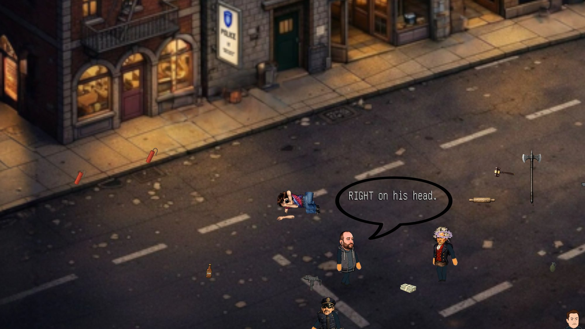

01 / The Cast
250 Thinking Souls
Every one of ~250 townsfolk has a mind of its own.
Beaver Valley is populated by roughly 250 named characters, and almost every one thinks for itself. Each has a distinct personality, private goals, allegiances, and relationships — and reacts to where it is, what’s happening, and what you just did. The whole cast improvises in-character, every single time, instead of reading canned lines.
- 100+ hand-written personalities across a roster of ~250 named characters.
- Real memory of the moment — who’s nearby, what they’re doing, and what just happened feeds every reaction.
- They never repeat themselves — even a character’s signature lines come out fresh.
- Crowds get their own people too — background fighters roll a random name, temperament, and backstory on the spot.
- Unfiltered and in-character — they talk like who they are, not like a help desk.